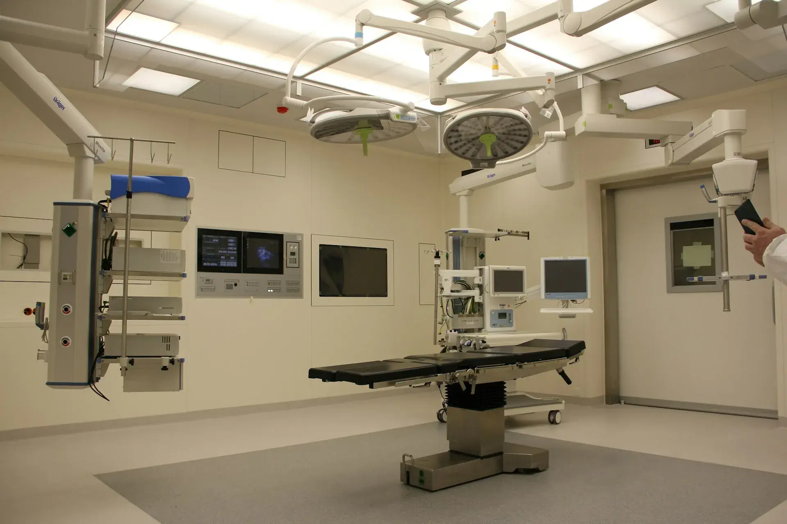
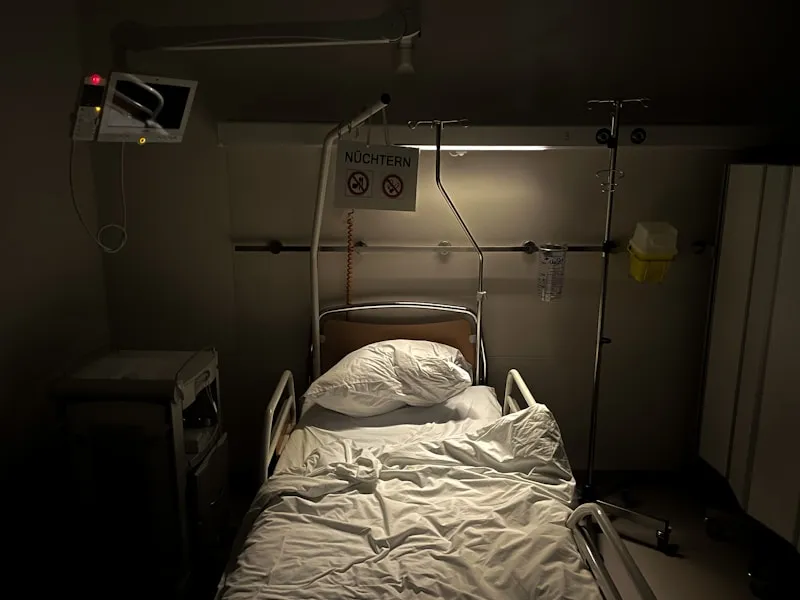
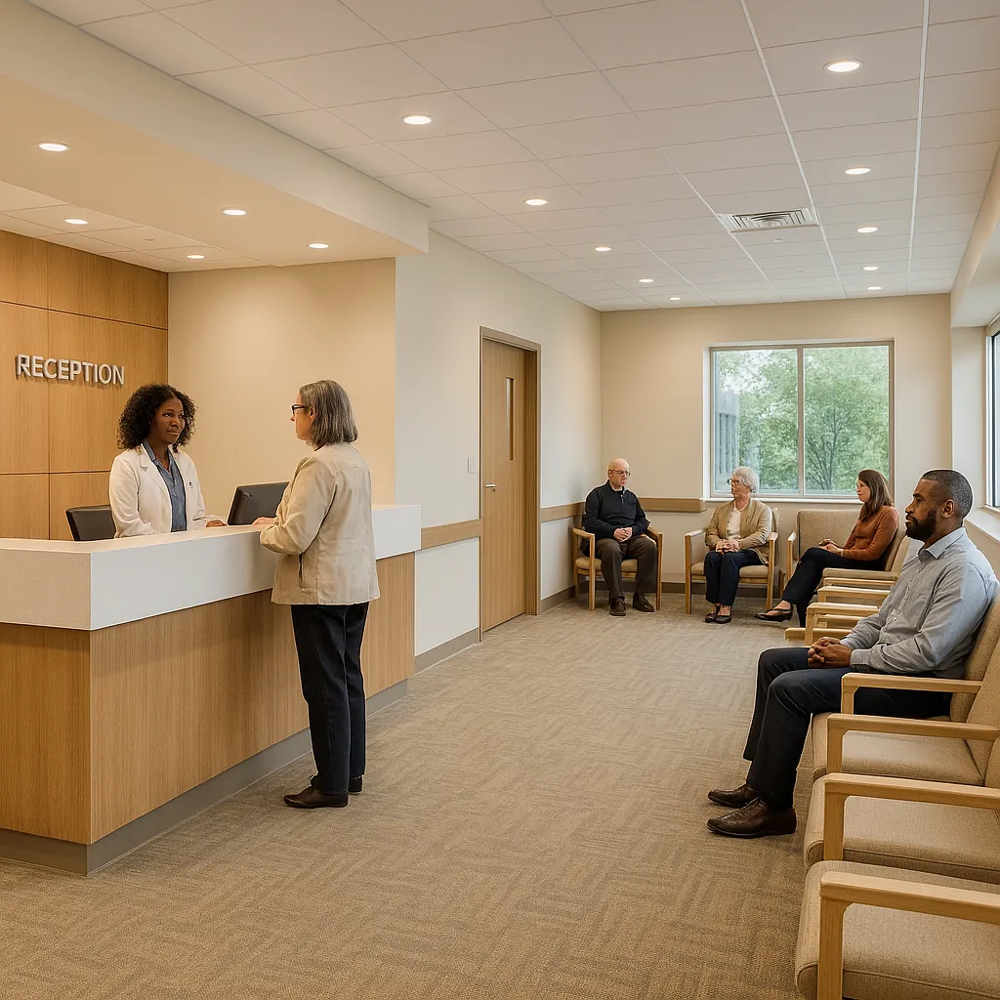

Medical Offices
Surface sanitation, disinfection, floor care, high-touch area attention, restroom sanitation, and environmental cleaning for medical office environments.
Explore Medical Office Sanitation
Dory's Cleaning Services is a Massachusetts-based healthcare cleaning company founded by a clinical cleaning professional with more than 22 years of experience working inside clinical environments including emergency trauma, cardiology, ambulatory care, procedural departments, nursing facilities, and MedSurg units.
After years of witnessing inconsistent sanitation standards and the risks they create for patients, staff, and healthcare organizations, our company was built to bring infection prevention awareness and accountability into healthcare cleaning.
We provide structured, clinical-grade sanitation services designed to support infection prevention, environmental safety, and operational reliability for medical facilities across Massachusetts.
This is not basic janitorial service.
This is healthcare cleaning.
Dory's Cleaning Services was founded with one goal: to bring infection prevention awareness and accountability to healthcare cleaning. Our leadership brings over two decades of direct clinical experience, giving us insight into the operational realities and risks inside clinical environments.
High-Touch Contamination Zones
Patient Safety Environments
Clinical Workflow Considerations
Infection Prevention Awareness
Professional Accountability & Documentation
When sanitation is handled with infection prevention awareness, it protects patients, staff, and the integrity of the facility.
Dory's Cleaning Services provides sanitation services designed for clinical environments where professionalism, reliability, and attention to detail are essential.
Surface sanitation, disinfection, floor care, high-touch area attention, restroom sanitation, and environmental cleaning for medical office environments.
Explore Medical Office Sanitation
Professional sanitation for specialty clinics including cardiology practices, with attention to clinical workflow and patient safety environments.
Explore Specialty Clinic Sanitation
Structured sanitation support for ambulatory care centers and outpatient facilities, designed around clinical schedules and patient flow.
Explore Ambulatory Facility SanitationDependable sanitation services for rehabilitation centers and nursing facilities where safety, professionalism, and resident comfort are priorities.
Explore Rehab & Nursing SanitationProfessional environmental cleaning for healthcare administrative spaces, maintaining clean and organized environments that support clinical operations.
Explore Administrative Office SanitationEach service plan is tailored to the specific needs and workflow of the facility to ensure sanitation is consistent, reliable, and professionally maintained.
Our focus is creating clean, organized, and professionally maintained environments that support clinical operations.
Getting your healthcare facility professionally sanitized is straightforward. Here's how we deliver compliance-driven results.
Call us or fill out our form. We'll schedule an on-site walkthrough to understand your facility's sanitation needs.
We assess your facility's compliance requirements and create a customized sanitation protocol with documented procedures.
Our trained cleaning professionals execute your sanitation protocol using EPA-registered disinfectants and CDC/OSHA-compliant procedures.
Receive detailed cleaning verification logs and quality control reports supporting your facility's compliance requirements.
Dory's Cleaning Services was founded with one goal: to bring infection prevention awareness and accountability to healthcare cleaning.
Our leadership brings over two decades of direct clinical experience, giving us insight into the operational realities and risks inside clinical environments.
We understand which surfaces and areas in clinical environments carry the highest contamination risk and prioritize them accordingly.
Our sanitation protocols are designed with patient safety as the top priority, respecting the sensitivity of healthcare spaces.
We work around clinical schedules and workflows, ensuring sanitation never disrupts patient care or facility operations.
Staff trained with awareness of infection prevention principles, bloodborne pathogen protocols, and environmental safety standards.
Detailed cleaning logs, quality control reports, and professional documentation to support your facility's compliance needs.
When sanitation is handled with infection prevention awareness, it protects patients, staff, and the integrity of the facility.
Proudly serving over 100 cities and towns across Massachusetts. From Marlborough to Worcester, we bring professional healthcare facility cleaning services to your facility.

Our cleaning professionals maintain infection control standards, protect patients and staff, and ensure compliance with CDC/OSHA guidelines — backed by real clinical insight.

For over two decades, we've provided precision sanitation for healthcare facilities. Our CEO personally visits every facility to ensure protocols are followed and standards are exceeded.
Don't just take our word for it. See what our satisfied customers have to say about our medical facility cleaning services.
Ready to experience the Dorys difference? Fill out the form and we'll get back to you within 24 hours with a customized sanitation proposal for your healthcare facility.
Serving the greater Marlborough area and throughout Massachusetts.
Find answers to common questions about our healthcare facility cleaning services.
Dory's Cleaning Services provides clinical-grade sanitation for medical offices, specialty clinics (including cardiology practices), ambulatory and outpatient facilities, rehabilitation and nursing facilities, and healthcare administrative offices. Each service plan is tailored to the specific needs and workflow of the facility. Services typically include surface sanitation, floor care, high-touch area attention, restroom sanitation, and waste removal.
We proudly serve over 100 cities and towns across Massachusetts, including Marlborough, Framingham, Worcester, Hudson, Westborough, Natick, Wellesley, Newton, Lexington, Concord, Sudbury, Waltham, and many more. Our service area covers most of Central and Eastern Massachusetts, ensuring professional healthcare services are available throughout the region.
Yes, Dorys Janitorial Cleaning Services is fully licensed with Massachusetts Home Improvement Contractor License #213341 and carries $2,000,000 in liability insurance coverage. Our staff is trained in CDC and OSHA infection prevention guidelines. We've been a trusted environmental cleaning partner serving Massachusetts for over 22 years.
Scheduling a facility assessment is easy. Call us at (978) 307-8107, email contact@doryscleaningservices.com, or fill out our online form. We'll schedule an on-site walkthrough to understand your facility's specific sanitation needs, compliance requirements, and create a customized proposal. We respond within 24 hours.
Dorys Janitorial Cleaning Services operates Monday through Saturday from 5:00 AM to 7:00 PM. We offer flexible scheduling to accommodate medical practices, including early morning, evening, and weekend service to avoid disrupting patient care. Contact us to discuss your facility's scheduling requirements.
Schedule a facility cleaning assessment today and discover why Massachusetts healthcare facilities trust Dorys for their cleaning needs.